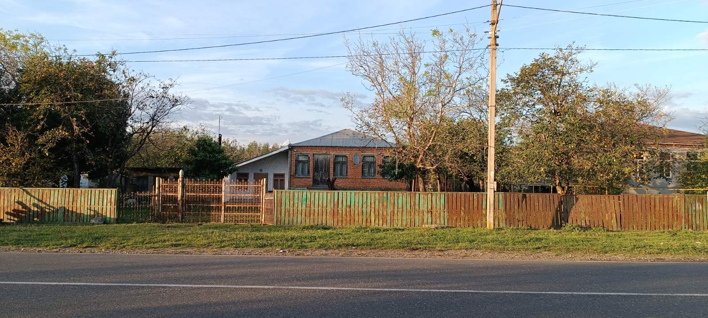
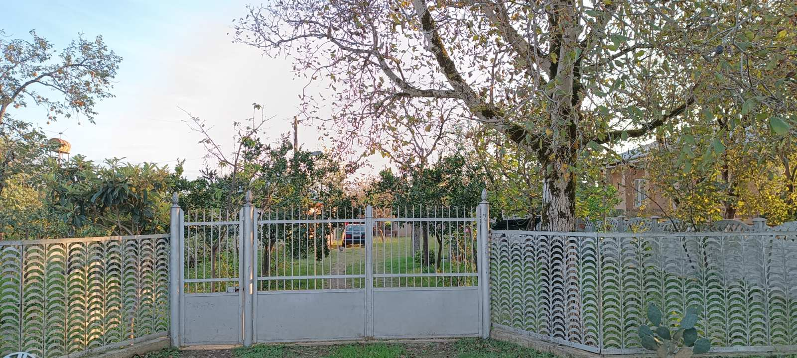

ფაჩუაშვილთა და ფურცხვანიძეთა საგვარეულო
გვარების ისტორია
ფაჩუაშვილთა და ფურცხვანიძეთა საგვარეულო ,ჯერ კიდევ ძვ.წ. III ათასწლეულიდან
იღებს სათავეს.ორივე გვარი თავადური არის,არაერთხელ გამოუჩენიათ მათ ბრძოლაში
თავი.აღმოსავლეთში ბაგრატიონები ,ხოლო დასავლეთში ფურცხვანიძეები და
ფაჩუაშვილები მეფობდენ,შემდეგ კი ბურჯალიანთა საგვარეულო ,გურამ ბურჯალიანის
მეთაურობით ბაგრატიონების მხარეს გადავიდა და გვიღალატა.წყაროებიდან ვიცით
,რომ გურამ ბურჯალიანი იყო გამორჩეულად ბრძენი ადამიანი და ის ამავდროულად
იყო შესანიშნავი მებრძოლი ,თანამებრძოლებმა მას ზედმეტსახელი "ჯია ჯია"
შეაქვეს.ფაჩუაშვილები და ფურცხვანიძეები დღემდე მოდიან თავიანთი დიდებული
გვარით.
ფაჩუაშვილები და ფურცხვანიძეები დღეს


ფურცხვანიძეების მცველი
ამ ეზოში ბინადრობს ფურცხვანიძეების მცველი დეიზი.ეს სახელი ბერძნულად მკვლელ
მზერას ნიშნავს.მისი წყალობით ფურცხვანიძეებს მშვიდად ძინავთ.